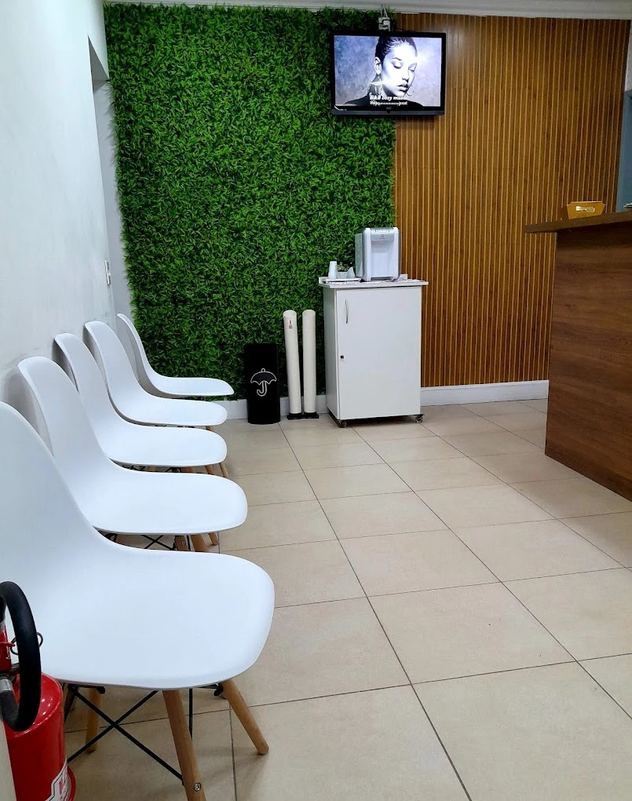
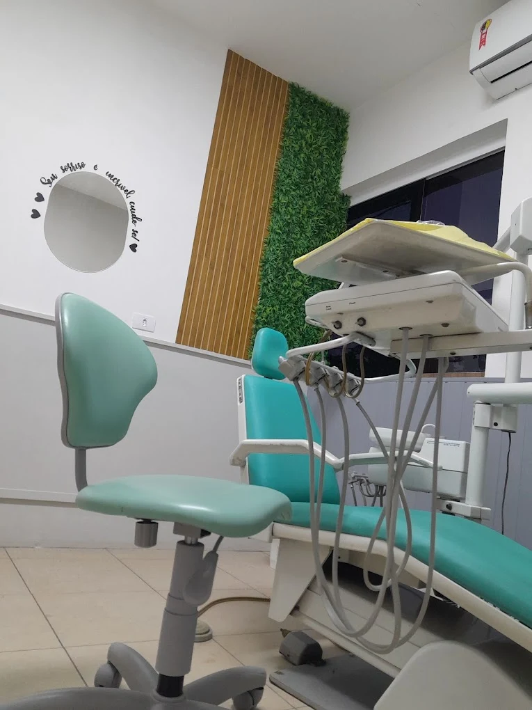

01✧
Clínica geral e prevenção
O cuidado que faz parte da rotina.Avaliação, limpeza e restaurações para acompanhar a saúde dos seus dentes.
Saiba maisDa prevenção a um novo momento do seu sorriso. Na Clínica Ruiz, o primeiro passo é ouvir você.
Vamos agendar sua avaliação? Conheça nossos tratamentos ↓

Conheça nosso espaçoCuidar da saúde bucal começa com espaço para falar, tirar dúvidas e entender o que precisa de atenção.
Em Rudge Ramos, a Clínica Odontológica Ruiz reúne diferentes áreas da odontologia em um ambiente de clima familiar. Da consulta de rotina aos tratamentos específicos, você pode conversar com a equipe sobre as suas necessidades.
Encontre o atendimento que procura.
A indicação de cada tratamento é definida na avaliação com o dentista.
Avaliação, limpeza e restaurações para acompanhar a saúde dos seus dentes.
Saiba maisImplantes dentários, coroas, próteses, dentaduras e pontes, conforme avaliação individual.
Saiba maisAvaliação e acompanhamento ortodôntico. Converse com a equipe sobre as opções de aparelhos.
Saiba maisAtendimento em endodontia, com avaliação do dente e orientação sobre o tratamento indicado.
Saiba maisAvaliação para extrações dentárias e procedimentos cirúrgicos, incluindo dentes do siso.
Saiba maisConverse com o dentista sobre clareamento e a indicação mais adequada para você.
Saiba mais“Os dentistas todos atenciosos e muito profissionais.”
“Ambiente super profissional e atendimento ótimo.”
“O dentista foi muito atencioso na minha avaliação e no tratamento.”
Trechos do resumo de avaliações do Google fornecido em novembro de 2026. Os nomes dos autores não constam no material.
Horário publicado em diretório baseado no CNES. Confirme o funcionamento e a disponibilidade antes de ir.
Precisa de informações sobre o acesso à sobreloja? Fale com a nossa recepção.
Entre em contato pelo WhatsApp (11) 98575-5981 ou ligue para (11) 4177-5999. A recepção confirma a disponibilidade e os detalhes do atendimento.
Há atendimento particular e por convênios. Informe o nome do seu plano à recepção para confirmar credenciamento, cobertura e documentação antes da consulta.
Na Av. Dr. Rudge Ramos, 440, sala 1, sobreloja, no bairro Rudge Ramos, em São Bernardo do Campo. Se precisar de informações sobre o acesso à sala, fale com a recepção.
O horário publicado em diretório baseado no CNES é de segunda a sexta, das 8h às 18h. Confirme a agenda e o funcionamento em feriados diretamente com a clínica.